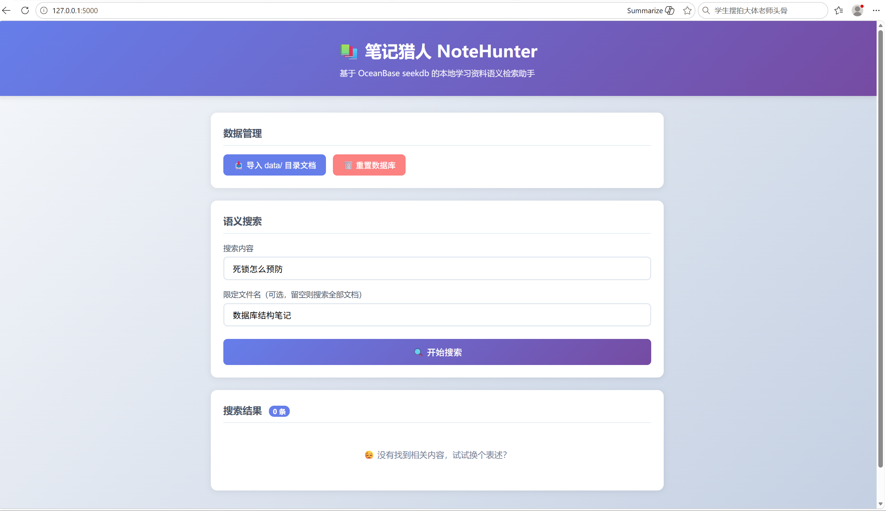
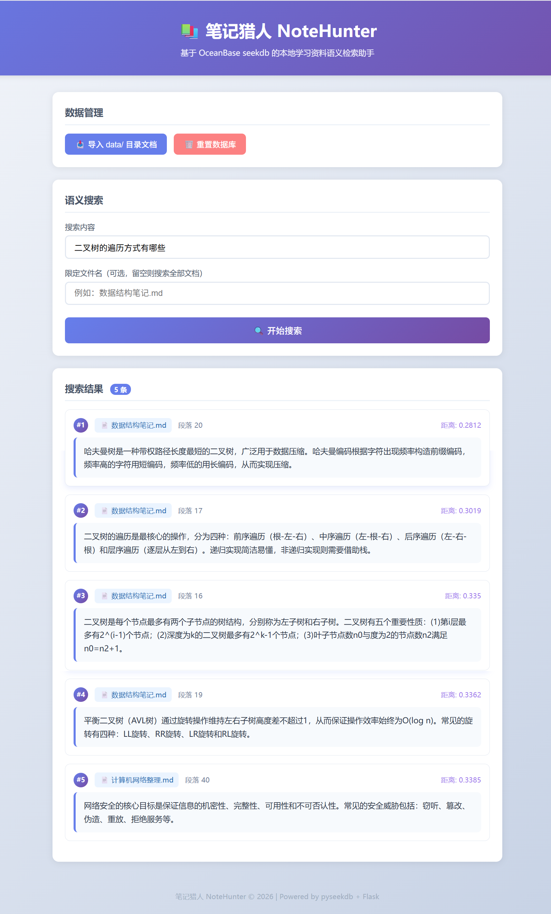
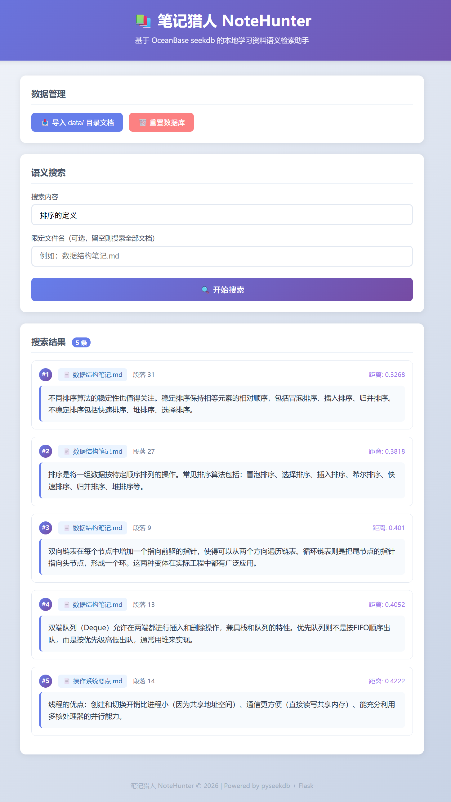
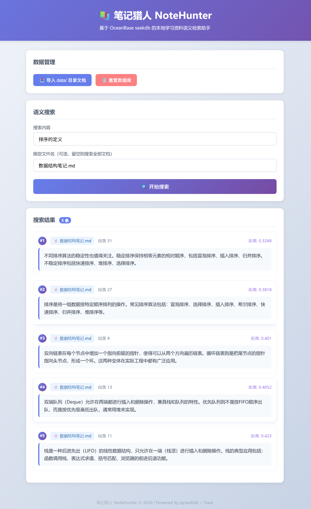

基于 OceanBase seekdb 的本地学习资料语义检索助手。用一句自然语言，就能从几十份笔记和 PDF 里找到你需要的知识点。
期末复习时，你一定经历过这样的崩溃时刻——
桌上摊着 几十份课程笔记、实验报告、PDF 课件，你明明记得某个知识点记在某处，但就是想不起来在哪个文件里。用关键词搜索？表述稍有不同就搜不到。逐份翻找？时间全浪费了。
笔记猎人 把本地文档自动切片后存入 seekdb 向量数据库，让你用一句自然语言就能定位到原文段落和出处——不再为"那个知识点到底在哪"而焦虑。
从文档导入到语义检索，五步完成知识定位
支持 .md / .txt / .pdf 三种常见格式，一键导入 data 目录下的所有学习资料。
智能按段落切分文档，保留来源文件名和段落序号，方便回溯原文。
切片后的文本转为向量写入 OceanBase seekdb，嵌入式模式无需部署数据库服务。
输入一句问句，基于向量相似度匹配最相关的笔记段落，告别关键词拼写焦虑。
支持按文件名过滤，在指定文档中精确搜索，结合语义匹配实现双重定位。
Python + Flask 一键启动 Web 服务，seekdb 嵌入式运行，无需 Docker 或外部数据库。
轻量、本地优先、开箱即用
实际使用界面一览



